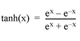

The TANH function returns the hyperbolic tangent of X.
Result = TANH(X)
Returns the single- or double-precision hyperbolic tangent.
The value for which the hyperbolic tangent is desired, specified in radians. If X is double-precision floating or complex, the result is of the same type. All other types are converted to single-precision floating-point and yield floating-point results. TANH is defined as:

If X is an array, the result has the same structure, with each element containing the hyperbolic tangent of the corresponding element of X.
This routine is written to make use of IDL’s thread pool, which can increase execution speed on systems with multiple CPUs. The values stored in the !CPU system variable control whether IDL uses the thread pool for a given computation. In addition, you can use the thread pool keywords TPOOL_MAX_ELTS, TPOOL_MIN_ELTS, and TPOOL_NOTHREAD to override the defaults established by !CPU for a single invocation of this routine. See Thread Pool Keywords for details.
; Find the hyperbolic tangent of 1 radian and print the result:
PRINT, TANH(1)
; Plot the hyperbolic tangent from -5 to +5 with an increment
; of 0.1:
PLOT, TANH(FINDGEN(101)/10. - 5)
|
Original |
Introduced |